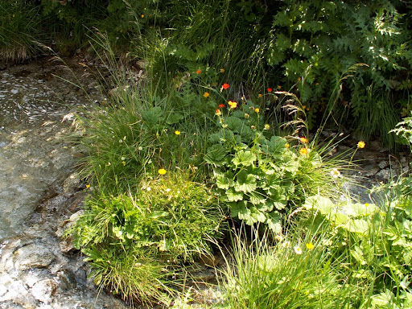
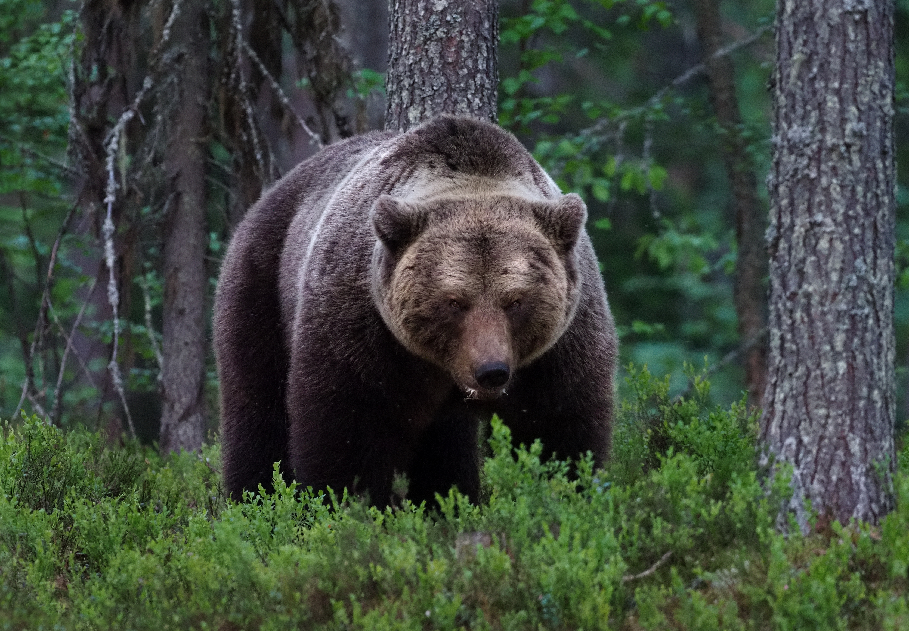

Резерват „Парангалица“ се намира в югозападната част на Рила планина и е част от Национален парк Рила. Територията му обхваща горното течение на река Благоевградска Бистрица.Той обхваща площ около 1 487–1 509 хектара (14,87–15,09 км²), което го прави средно голям по размер резерват в България. Разположението му в труднодостъпен планински район е една от основните причини природата да бъде запазена в почти напълно естествен вид.
Климатът в резервата е типично планински, със студени и продължителни зими и кратко, прохладно лято. Снежната покривка се задържа дълго време. Релефът е силно пресечен, със стръмни склонове, което допълнително ограничава човешката дейност в района.Водите в резервата са представени от планински реки, потоци и извори, най-значимата е Благоевградска Бистрица, чието течение формира множество микродолини и дерета. Тези водни обекти осигуряват постоянна влага за горите и създават местообитания за редки водни и полуводни видове.Почвите са предимно каменисти, кафяви и планински алувиални, с добър дренаж, което спомага за естественото развитие на смърчовите и еловите гори. На места се срещат и торфени почви, особено около влажните долини и потоците.
Резерват „Парангалица“ е известен с уникалните си първични гори, които никога не са били сечени. Те представляват едни от най-добре запазените смърчови гори в България. Много от дърветата са над 200–300 години, а височината им достига до 50–60 метра. Освен смърч, се срещат и бяла мура, ела и бук, като разпространението на видовете зависи от надморската височина и почвените условия.
Характерни особености на растителността:

Животинският свят е изключително богат и включва както едри хищници, така и редки тревопасни и птици. Благодарение на строгата защита, видовете могат да живеят и да се размножават без човешка намеса.
Основни животински видове:

Резерватът е обявен през 1933 година, което го прави един от най-старите резервати в България. Създаден е с цел да се опазят девствени иглолистни гори, които още тогава са били рядкост поради масовата сеч в страната.
През 1977 година „Парангалица“ е включен в програмата „Човек и биосфера“ на UNESCO. Това означава, че резерватът има международно значение и се признава като важен обект за опазване на природното наследство.
Резерватът е със строг режим на опазване. Забранени са ловът, сечта, строителството, пашата и свободният туризъм. Разрешени са само научни изследвания и контролирани образователни посещения при строго определени условия.
„Парангалица“ има голяма стойност за науката, защото позволява да се изучават естествени горски екосистеми без човешка намеса. Учените наблюдават процеси като естествено възобновяване на горите и взаимодействие между различните видове.
Резерват „Парангалица“ е едно от най-ценните природни богатства на България. Той допринася за опазването на биоразнообразието, за развитието на екологичното образование и за съхраняването на природното наследство за бъдещите поколения.